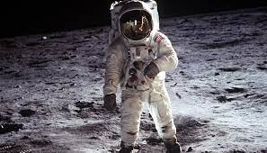

El paisaje de la Luna
La Luna da una vuelta sobre su eje cada vez que describe una óribta alrededor de la Tierra, presentado siempre así la misma cara a los obervadores terrestres. Sin embargo, incluso sin ningún tipo de ayuda visual esta cara incambiable presenta un contraste de dos tipos de paisajes -zonas oscuras como llanuras de bajo relieve, y áreas más brillantes y decididamente más rugosas- que cubren cerca de dos tercios de la superficie. Los primitivos como maria (o mares), dando el nombre de terrae (o tierras) a las brillantes regiones elevadas. Desde entonces han pervivido esos términos a pesar de que es bien conocido desde hacer tiempo que la superficie de la Luna no cotiene agua en absoluto.
El Apolo 11
Los hombres pusieron pie en la Luna por primera vez logrando una doble meta, la de aterrizar y volver a salvo a la Tierra, y la de asegurar un trozo de superficie lunar(la muestra de contingencia) para posteriores estudios de laboratorio. En esta ocasión dos astronautas del Apolo hicieron muchomás durante cuatro horas humanas de actividad en la superficie de la Luna. Tomaronmuchas fotografías; recogieron más de 21 kg. de muesras de rocas,desplegaron equipamiento científico alrededor de la zona de aterrizaje, queincluía instrumentos para medir movimiento en el interior de laLuna, otros para reflejar rayos láser hacia la Tierra a fin deobtener una determinación exacta de la distancia entre la Tierra yla Luna (reflector láser), y aparatos para medir el tipo y laenergía de las partículas atómicas procedentes del Sol.
